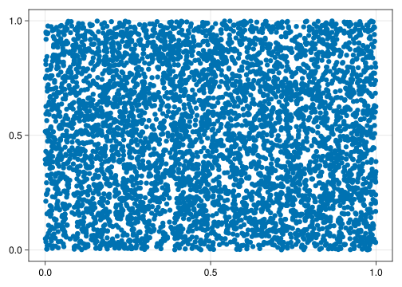
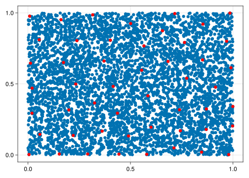
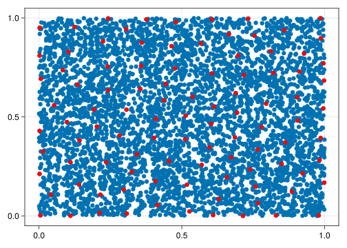
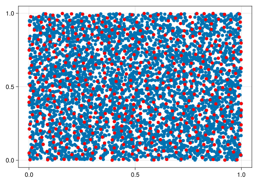
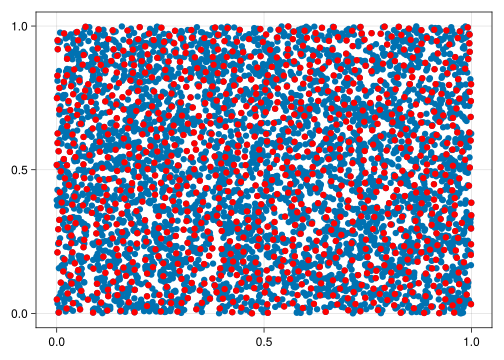

using GeometricDatasets
using CairoMakieSampling data
Methods for extracting subsets of the original pointcloud.
Farthest points sample
doc
farthest_points_sample(X::PointCloud, n::Integer; metric = Euclidean())Given X and an integer n, return a subset of X such that its points are the most distant possible from each other.
Details
Let X be a metric space with k points. Select a random point x_1 ∈ X. Select then x_2 as the point most distant from x_1 in relation to the given metric. After that, choose x_3 as the point most distant to both x_1 and x_2 at the same time. Keep choosing points like this until we have n points.
Let \(X\) be a set of random numbers in the unit square:
X = rand(2, 5000);
fig, ax, plt = scatter(X);
fig
Let’s apply the farthest points sample using different parameters \(n\)
L = farthest_points_sample(X, 50)
plt2 = scatter!(ax, X[:, L], color = :red);
fig
plt2.alpha = 0
L = farthest_points_sample(X, 100)
plt2 = scatter!(ax, X[:, L], color = :red)
fig
plt2.alpha = 0
L = farthest_points_sample(X, 500)
plt2 = scatter!(ax, X[:, L], color = :red)
fig
plt2.alpha = 0
L = farthest_points_sample(X, 1000)
plt2 = scatter!(ax, X[:, L], color = :red)
fig
\(ϵ\)-net
An \(ϵ\)-net is a subset \(Y\) of a point cloud \(X\) such that every point \(x \in X\) is in an ϵ-ball with center in \(y\) for some \(y \in Y\).
Example
First we define X to be 1000 random points in the unique square of \(\mathbb{R}^2\):
X = rand(2, 10^4)
fig, ax, plt = scatter(X)
fig
Then we create the \(\epsilon\)-net of \(X\) and plot it in red:
ϵ = 0.1
L = epsilon_net(X, ϵ)
Y = X[:, L]
scatter!(ax, Y, color = :red)
fig